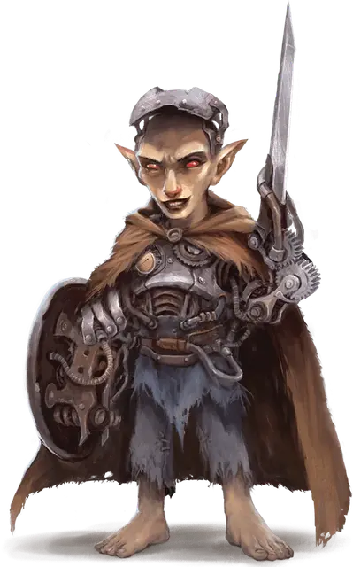

Тикси Токворт
Tixie Tockworth
Маленький Гуманоид (Гном), хаотично-злой, именной НИП

Класс Доспеха 17 (природный доспех, щит)
Хиты 75 (10к6 + 40)
Скорость 30 футов
| мод | спас | ||
|---|---|---|---|
| СИЛ | 16 | +3 | +3 |
| ЛОВ | 13 | +1 | +1 |
| ТЕЛ | 18 | +4 | +4 |
| мод | спас | ||
|---|---|---|---|
| ИНТ | 17 | +3 | +6 |
| МДР | 9 | −1 | +2 |
| ХАР | 10 | +0 | +0 |
Навыки Восприятие +2, Магия +9
Чувства истинное зрение 60 футов, пассивное Восприятие 12
Языки Общий, Гномий, Подземный, Терран
Опасность 7 (2900 опыта)
Бонус мастерства +3
Особенности
Силовое поле. Токворт создает вокруг себя магическое силовое поле. Это силовое поле имеет 15 хитов и восстанавливает все свои хиты в начале каждого хода Токворт, но оно перестает функционировать, если хиты Токворт опускаются до 0. Любой урон, который получает Токворт, сначала вычитается из хитов силового поля. Каждый раз, когда силовое поле восстанавливает хиты, на Токворт заканчиваются следующие состояния: схваченный, опутанный и ошеломлённый.
Действия
Мультиатака. Токворт совершает три атаки Коротким мечом или Разрядом молнии.
Короткий меч. . Рукопашная атака оружием: +6 к попаданию, досягаемость 5 футов, одна цель. Попадание: 6 (1к6 +3) колющего урона плюс 10 (3к6) силовым полем.
Разряд молнии. . Рукопашная атака оружием: +6 к попаданию, дистанция 60 футов, одна цель. Попадание: 16 (3к10) урона электричеством.
Использование заклинаний. Токворт может накладывать следующие заклинания, без использования материальных компонентов, используя Интеллект в качестве базовой характеристики (Сл спасброска от заклинания 14):
• Неограниченно: необнаружимость [nondetection] (только на себя);
• 2/день: переносящая дверь [dimension door];
• 1/день каждое: глухота/слепота [blindness/deafness], размытый образ [blur].
Бонусные действия
Обжигающий пар (перезарядка 5-6). Токворт выпускает струю обжигающе горячего пара 15-футовым конусом. Каждое существо в этом конусе должно совершить спасбросок Ловкости Сл 15, получая 10 (3к6) урона огнём в случае провала или половину этого урона в случае успеха.
Описание
Используя магию и механические ноу-хау, Тикси Токворт превратила большую часть себя в машину. То, что когда-то было её торсом, теперь превратилось в стальной панцирь, способный выпускать струи обжигающего пара. Её левая рука заканчивается вибрирующим лезвием, а правая рука заканчивается металлическим щитом. Её глаза превратились в блестящие, металлически-красные шары, которые могут видеть сквозь иллюзии.
В своей нынешней форме Токворт стремится к безжалостному уничтожению любого и всего, что стоит на пути к её конечной цели, состоящей в том, чтобы стать Конструктом. Если ей позволят продолжить свою работу, она достигнет этого апофеоза за считанные недели, после чего её тип существа изменится на Конструкт. Она также получит иммунитет к урону ядом, а также иммунитет к состояниям парализованный, окаменевший и отравленный. В остальном её статистика не меняется.